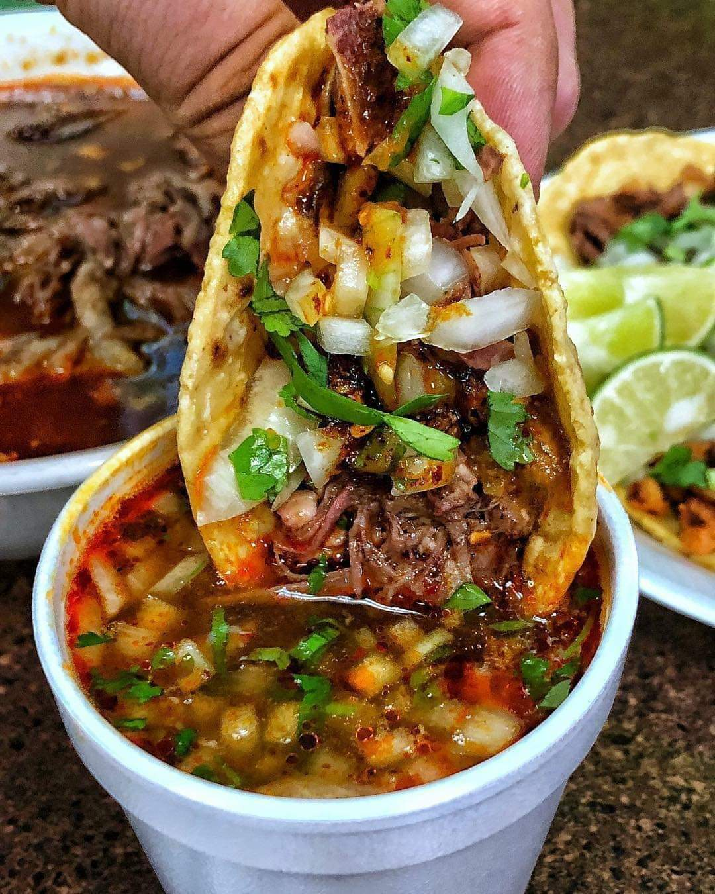

☰
Inicio
Información Personal
Formación Academica
Situación Laboral
Actividades Extraescolares
Volver al contenedor
Mi blog Personal
Inicio
Volver al contenedor

Tae Kwon Do
En mis tiempos libres o en vacaciones, ayudo a mi madre en su trabajo de maestra de Tae Kwon Do
Taqueria El Chapito
Trabaje en la Birrieria El chapito donde venden tacos de birria, dorados y birria en su jugo